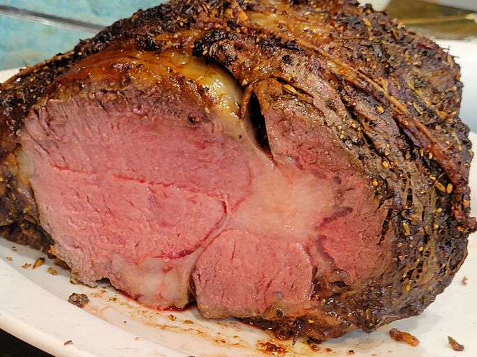

Costilla Prime Perfecta

-
This simple, foolproof "mathematical method" for making the very best prime rib will greatly increase your chances of success. Here is the formula: Multiply the exact weight times 5 minutes. For me it was 5.35 x 5 = 26.75 minutes, which we round up to 27.
-
You'll cook your room-temperature prime rib at 500 degrees F for exactly that many minutes. (Twenty-seven minutes, in my case.) Then turn off the oven and wait 2 hours without opening the door. When the time's up, remove the prime rib and slice into the most perfectly medium-rare meat you've ever seen. See? That's all it takes to make foolproof prime rib cooked to a perfect pink that's somewhere just a shade under medium rare.
-
Just make sure you're starting with a prime rib that has been brought to room temperature! This is critical in order for the math to work!
-
Serve your prime rib with Chef John's Beef Au Jus or Prime Rib Gravy and Homemade Horseradish Sauce.
-
1 (5-pound) standing beef rib roast
-
1 tablespoon kosher salt
-
1 tablespoon freshly ground black pepper
-
1 tablespoon garlic powder
-
1 tablespoon onion powder
-
1 tablespoon paprika
-
1 tablespoon dried thyme
-
1 tablespoon dried rosemary
-
1 tablespoon dried oregano
-
1 tablespoon olive oil